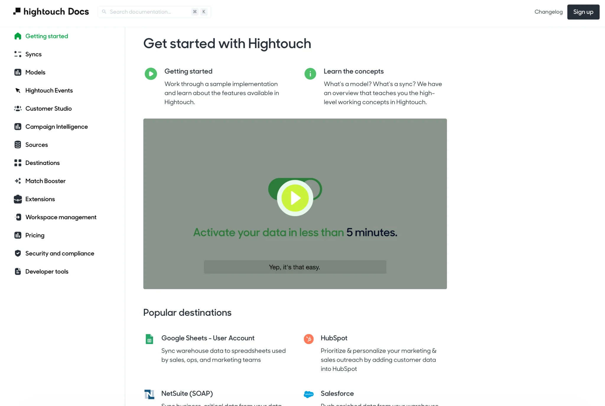
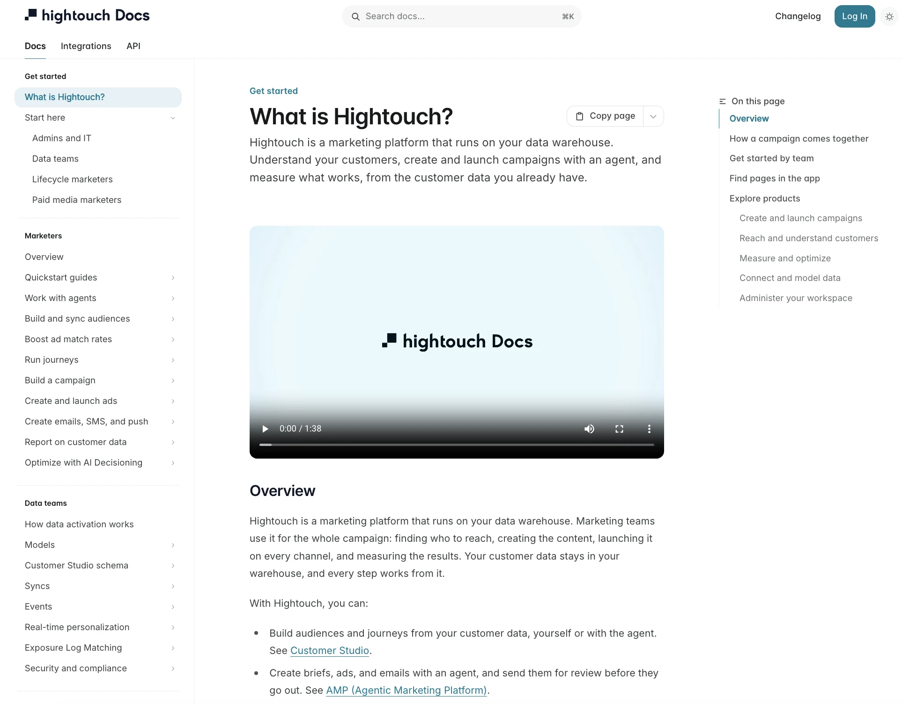

01.
Leading Hightouch's Docs Platform Migration
Our custom docs site was costly to maintain and hard for AI tools to read. I compared four options, chose Mintlify, and led the move of 646 pages. I still own the site and its content.
Launched two days early, with a substantially lower annual contract.
Read case study
